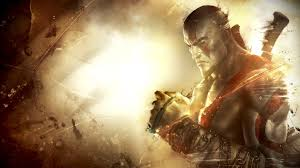
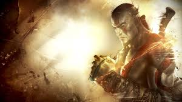

God of War III es un videojuego de hack and slash de acción y aventura desarrollado por Santa Monica Studio y publicado por Sony Computer Entertainment (SCE). Lanzado por primera vez para la consola PlayStation 3 (PS3) el 16 de marzo de 2010, el juego es la quinta entrega de la serie God of War, la séptima cronológicamente y la última en la era griega de la franquicia, y la secuela de 2007 God of War II. Basado libremente en la mitología griega, el juego se desarrolla en la antigua Grecia con la venganza como motivo central. El jugador controla al protagonista y antiguo dios de la guerra Kratos, tras su traición a manos de su padre Zeus, rey de los dioses del Olimpo. Reanudando la Gran Guerra, Kratos asciende al Monte Olimpo hasta que es abandonado por la Titán Gaia. Guiado por el espíritu de Atenea, Kratos lucha contra monstruos, dioses y titanes en la búsqueda de Pandora, sin la cual no puede abrir la Caja de Pandora, derrotar a Zeus y acabar con el reinado de los dioses olímpicos para vengarse.
Es un videojuego muy entretenido lleno de acción e historia griega, este salio para las consolas ps3 y ps4, siendo uno de los mejores juego de ps3. este cuenta con diferentes modos de jugabilidad entre ellos estan: El modo historia donde podemos jugar las aventuras de nuestro protagonista Kratos, el modo desafio donde podemos completar desafios para obtener coleccionables, etc.
 

Dragon Ball: Budokai Tenkaichi, lanzado en Japón como Dragon Ball Z: Sparking! (ドラゴンボールZ Sparking!?), es una serie de juegos de lucha basados en anime y manga Dragon Ball de Akira Toriyama. Cada entrega fue desarrollada por Spike para PlayStation 2, mientras que Bandai en Japón y Atari los publicaron en todos los demás países de 2005 a 2007 La segunda y tercera entrega también se lanzaron para Nintendo Wii. El papel de Bandai ha sido desempeñado por los de Namco Bandai Games, y la red de distribución PAL de Atari fue absorbida por Namco Bandai Partners. Namco Bandai también ha manejado publicaciones en Norteamérica para futuros juegos de Dragon Ball Z desde 2010, terminando efectivamente la participación de Atari.1 La trilogía fue seguida por Dragon Ball Z: Tenkaichi Tag Team, lanzado en 2010 para PlayStation Portable y Dragon Ball Z: Ultimate Tenkaichi, lanzado en 2011 para PlayStation 3 y Xbox 360.Dragon Ball: Budokai Tenkaichi, lanzado en Japón como Dragon Ball Z: Sparking! (ドラゴンボールZ Sparking!?), es una serie de juegos de lucha basados en anime y manga Dragon Ball de Akira Toriyama. Cada entrega fue desarrollada por Spike para PlayStation 2, mientras que Bandai en Japón y Atari los publicaron en todos los demás países de 2005 a 2007 La segunda y tercera entrega también se lanzaron para Nintendo Wii. El papel de Bandai ha sido desempeñado por los de Namco Bandai Games, y la red de distribución PAL de Atari fue absorbida por Namco Bandai Partners. Namco Bandai también ha manejado publicaciones en Norteamérica para futuros juegos de Dragon Ball Z desde 2010, terminando efectivamente la participación de Atari.1 La trilogía fue seguida por Dragon Ball Z: Tenkaichi Tag Team, lanzado en 2010 para PlayStation Portable y Dragon Ball Z: Ultimate Tenkaichi, lanzado en 2011 para PlayStation 3 y Xbox 360.
Este es muy buen videojuego, es de mas estilo de pelea por así decirlo, es un juego que se juego tanto individualmente como jugar entre varias personas, inspirada en el Anime Dragon Ball tiene diferentes tipos de modos de juegos entre el mas importante el de duelo donde se pelea con personajes iconícos de esta saga siendo este su punto fuerte, este puede traer horas de diversión por ser mu bueno.
Left 4 Dead 2 es un videojuego de disparos en primera persona cooperativo de tipo videojuego de terror creado por la compañía Valve. Es la secuela de Left 4 Dead y se lanzó al mercado el 17 de noviembre de 2009 en Estados Unidos y América. En Europa llegó tres días después, el 20 de noviembre. Esta secuela está disponible para PC y para la consola Xbox 360. El 14 de diciembre de 2009 fue anunciado el primer contenido descargable para esta secuela: una nueva campaña llamada The Passing, que se desarrolla entre las dos primeras campañas del juego. Aquí se reúnen los protagonistas del primer Left 4 Dead (Francis, Louis y Zoey) con los sobrevivientes de esta secuela. Bill aparece sin vida, ya que se sacrificó para que los demás pudieran escapar. Salió a la luz el 22 de abril de 2010. Se ha desarrollado una versión para Linux (utilizando Ubuntu en las pruebas) cuya beta publica se lanzó en mayo de 2013.
Este juego se puede jugar tanto con amigos como solo, cuenta con 2 tipos de modalidad, historia donde puede jugar con tus amigos en cooperativo donde tienen que tratar de llegar a un refugio mientras que por el camino tiene que matar zombies, y el modo versus el cual puedes jugar con tus amigos en un vs donde tienes que ser zombie y superviviente ganando el equipo que mas puntos hace.
Por esta razón contando con zombies iconicos como el Tank es que es un de los mejores videojuegos y tan iconíco para muchas personas.


Borderlands 2 es un videojuego de disparos en primera persona con elementos de rol, se trata de la secuela del videojuego de 2009, Borderlands. Fue desarrollado por Gearbox Software y distribuido por 2K Games para las plataformas Microsoft Windows, PlayStation 3 y Xbox 360. Fue lanzado el 18 de septiembre de 2012 en Norteamérica y el 21 de septiembre de 2012 en el resto del mundo. Una versión para PlayStation Vita fue lanzado el 8 de mayo de 2014, desarrollado por Iron Galaxy Studios en colaboración de Gearbox Software. Una versión compatible con PlayStation VR fue anunciada por Gearbox Software para su lanzamiento el 14 de diciembre de 2018.
El juego se sitúa 5 años después de su anterior título Borderlands.
Jack el guapo, antagonista principal, ha tomado la corporación Hyperion, y se ha autoproclamado dictador de Pandora tras haber encontrado "La Cámara". El nuevo grupo viaja en tren en busca de La Cámara. Pero resulta ser una trampa de Jack pues quiere eliminar a todos los buscadores de la cámara, y el vagón donde viajaban resulta ser un vagón lleno de explosivos, pero los buscadores sobreviven a este atentado, al ser rescatados por Clap-Trap, deciden continuar con su búsqueda de la cámara, y asesinar a Jack y traer de vuelta la paz a Pandora.
Este viedeojuego es un tipo de mundo abierto donde se tienen que cumplir misiones para avanzar en la historia, lo mas interesante de este juego es que se puede jugar en modo cooperativo con tus amigos para asi poder avanzar mas rapido.
Es un videojuego tipo shooter en el cual se utilizan armas de fuego el cual la vuelve muy interesante, al jugar con amigos cada uno elige un personaje que tiene deferentes habilidades para poder avanzar mas rapido en la historia.
Mas que todo por ser un juego en el cual juegas con tus amigos es por lo cual es un videojuego muy atractivo para las personas de cualquier tipo de edad.